setwd(".")
library(psych)
library(dplyr)college.df <- read.csv("College.csv",sep=",",header=T,stringsAsFactors = F)
head(college.df,6)## Name Private Apps Accept Enroll Top10perc Top25perc F.Undergrad P.Undergrad Outstate
## 1 Abilene Christian University Yes 1660 1232 721 23 52 2885 537 7440
## 2 Adelphi University Yes 2186 1924 512 16 29 2683 1227 12280
## 3 Adrian College Yes 1428 1097 336 22 50 1036 99 11250
## 4 Agnes Scott College Yes 417 349 137 60 89 510 63 12960
## 5 Alaska Pacific University Yes 193 146 55 16 44 249 869 7560
## 6 Albertson College Yes 587 479 158 38 62 678 41 13500
## Room.Board Books Personal PhD Terminal S.F.Ratio perc.alumni Expend Grad.Rate
## 1 3300 450 2200 70 78 18.1 12 7041 60
## 2 6450 750 1500 29 30 12.2 16 10527 56
## 3 3750 400 1165 53 66 12.9 30 8735 54
## 4 5450 450 875 92 97 7.7 37 19016 59
## 5 4120 800 1500 76 72 11.9 2 10922 15
## 6 3335 500 675 67 73 9.4 11 9727 55numPrivPubl<-table(college.df$Private)
names(numPrivPubl) <- c("Public","Private")
print(numPrivPubl)## Public Private
## 212 565As shown in the folloring graphs, public colleges have a higher mean of PhD faculty. There are almost no public universities with less of 45% PhD holding faculty. In the private sector, there are far more universities in which more faculty without a PhD are allowed to teach. However, a greater amount of private colleges have more than 90% of their faculty holding PhD’s than in public institutions. This results shows that there is a far greater variance in the private colleges in their faculty selection.
public.df <- college.df[college.df$Private=="No",][-c(2)]
private.df <- college.df[college.df$Private=="Yes",][-c(2)]
hist(public.df$PhD,
main="Phd Holders in Public Universities",
xlab=paste("Phd ( mean:",sprintf("%5.1f",mean(public.df$PhD)),")"),
col="blue",
freq = FALSE,
nclass = 20)
lines(density(public.df$PhD),col="black",type = "l")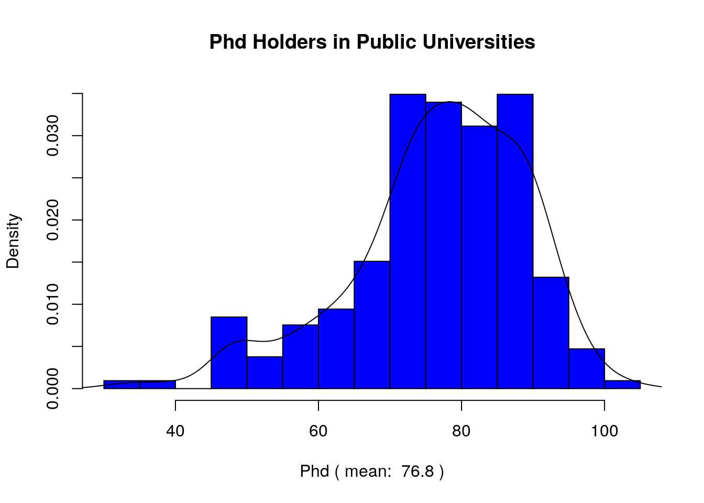
hist(private.df$PhD,
main="Phd Holders in Private Universities",
xlab=paste("Phd ( mean:",sprintf("%5.1f",mean(private.df$PhD)),")"),
freq=FALSE,
col="red",
nclass = 20
)
lines(density(private.df$PhD),col="black",type = "l")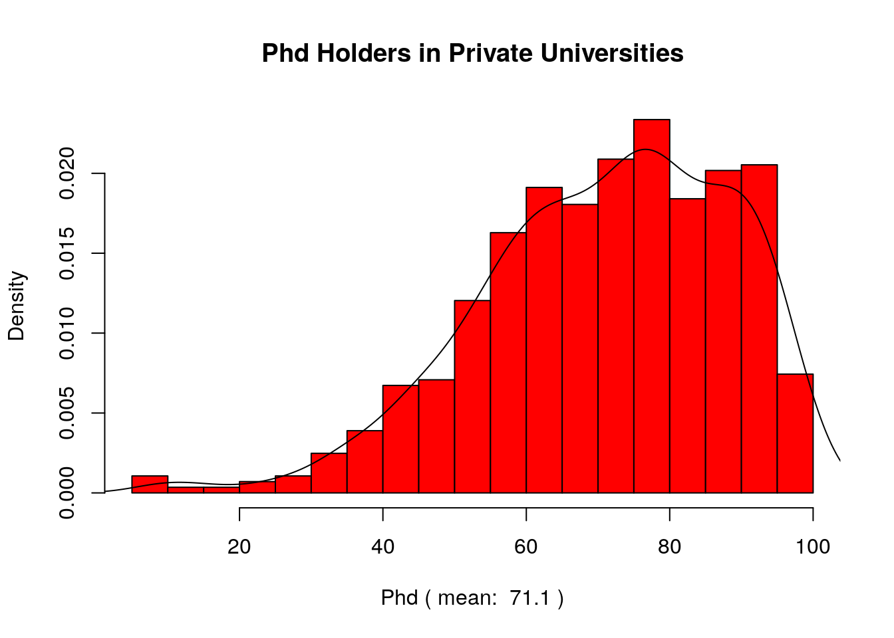 ### d) Printing colleges with lowest and highest graduation rates. Colleges with the Lowest Graduation Rates
collegeGrad.df <-college.df[college.df$Grad.Rate<=100,]
#There shouldn't be colleges with graduation rate higher than 100%
CollByGradRate.df <- select(arrange(collegeGrad.df,collegeGrad.df$Grad.Rate),Name,Grad.Rate)
head(CollByGradRate.df,5)## Name Grad.Rate
## 1 Texas Southern University 10
## 2 Alaska Pacific University 15
## 3 Montreat-Anderson College 15
## 4 Brewton-Parker College 18
## 5 Claflin College 21Colleges with the Highest Graduation Rates
tail(CollByGradRate.df,5)## Name Grad.Rate
## 772 Lindenwood College 100
## 773 Missouri Southern State College 100
## 774 Santa Clara University 100
## 775 Siena College 100
## 776 University of Richmond 100summary(college.df)## Name Private Apps Accept Enroll Top10perc Top25perc
## Length:777 Length:777 Min. : 81 Min. : 72 Min. : 35 Min. : 1.0 Min. : 9.0
## Class :character Class :character 1st Qu.: 776 1st Qu.: 604 1st Qu.: 242 1st Qu.:15.0 1st Qu.: 41.0
## Mode :character Mode :character Median : 1558 Median : 1110 Median : 434 Median :23.0 Median : 54.0
## Mean : 3002 Mean : 2019 Mean : 780 Mean :27.6 Mean : 55.8
## 3rd Qu.: 3624 3rd Qu.: 2424 3rd Qu.: 902 3rd Qu.:35.0 3rd Qu.: 69.0
## Max. :48094 Max. :26330 Max. :6392 Max. :96.0 Max. :100.0
## F.Undergrad P.Undergrad Outstate Room.Board Books Personal PhD
## Min. : 139 Min. : 1 Min. : 2340 Min. :1780 Min. : 96 Min. : 250 Min. : 8.0
## 1st Qu.: 992 1st Qu.: 95 1st Qu.: 7320 1st Qu.:3597 1st Qu.: 470 1st Qu.: 850 1st Qu.: 62.0
## Median : 1707 Median : 353 Median : 9990 Median :4200 Median : 500 Median :1200 Median : 75.0
## Mean : 3700 Mean : 855 Mean :10441 Mean :4358 Mean : 549 Mean :1341 Mean : 72.7
## 3rd Qu.: 4005 3rd Qu.: 967 3rd Qu.:12925 3rd Qu.:5050 3rd Qu.: 600 3rd Qu.:1700 3rd Qu.: 85.0
## Max. :31643 Max. :21836 Max. :21700 Max. :8124 Max. :2340 Max. :6800 Max. :103.0
## Terminal S.F.Ratio perc.alumni Expend Grad.Rate
## Min. : 24.0 Min. : 2.5 Min. : 0.0 Min. : 3186 Min. : 10.0
## 1st Qu.: 71.0 1st Qu.:11.5 1st Qu.:13.0 1st Qu.: 6751 1st Qu.: 53.0
## Median : 82.0 Median :13.6 Median :21.0 Median : 8377 Median : 65.0
## Mean : 79.7 Mean :14.1 Mean :22.7 Mean : 9660 Mean : 65.5
## 3rd Qu.: 92.0 3rd Qu.:16.5 3rd Qu.:31.0 3rd Qu.:10830 3rd Qu.: 78.0
## Max. :100.0 Max. :39.8 Max. :64.0 Max. :56233 Max. :118.0#To look at a better resolution, uncomment
#bitmap("colleges.tiff", height = 4, width = 4, units = 'in', type="tifflzw", res=300)
pairs(college.df[,3:12],main="Colleges Correlations")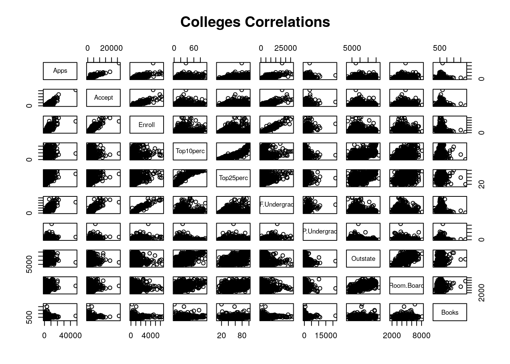
pairs.panels(college.df[,3:12],
main="Colleges Correlations",
pch=19
)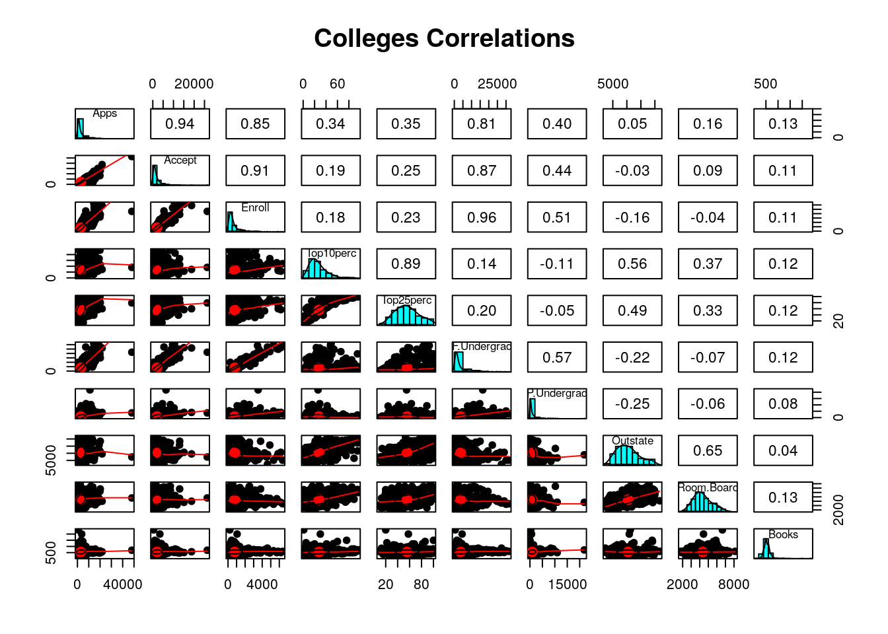 #### iii.
names<-c("Private","Public")
boxplot(college.df[college.df$Private=="Yes",]$perc.alumni,college.df[college.df$Private=="No",]$perc.alumni,names=names,ylab="Percentage")
title("Alumni who Donate")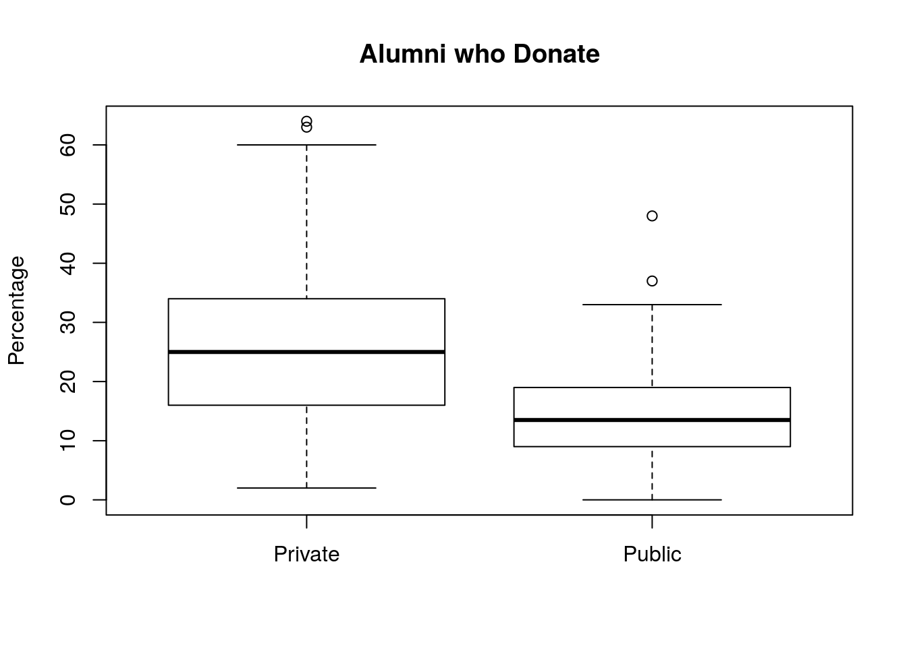 #### iv.
names<-c("Private","Public")
boxplot(college.df[college.df$Private=="Yes",]$PhD,college.df[college.df$Private=="No",]$PhD,names=names,ylab="Percentage")
title("Faculty with PhD")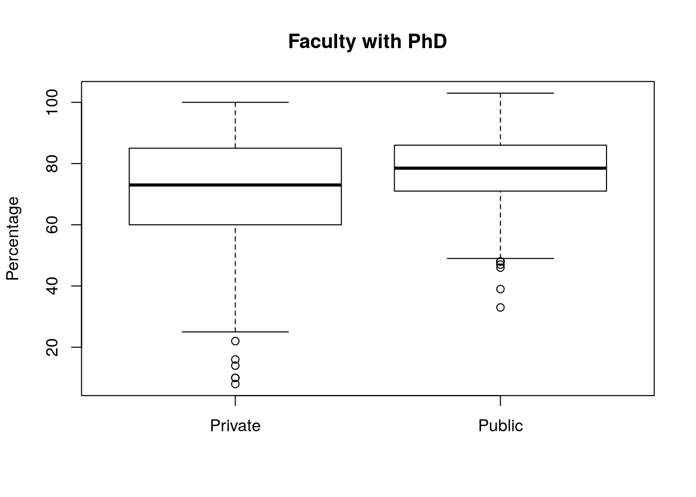 #### v.
college<-college.df
Elite <- rep("No",nrow(college))
Elite[college$Top10perc > 50] <-"Yes"
Elite <- as.factor(Elite)
college <-data.frame(college,Elite)
summary(college)## Name Private Apps Accept Enroll Top10perc Top25perc
## Length:777 Length:777 Min. : 81 Min. : 72 Min. : 35 Min. : 1.0 Min. : 9.0
## Class :character Class :character 1st Qu.: 776 1st Qu.: 604 1st Qu.: 242 1st Qu.:15.0 1st Qu.: 41.0
## Mode :character Mode :character Median : 1558 Median : 1110 Median : 434 Median :23.0 Median : 54.0
## Mean : 3002 Mean : 2019 Mean : 780 Mean :27.6 Mean : 55.8
## 3rd Qu.: 3624 3rd Qu.: 2424 3rd Qu.: 902 3rd Qu.:35.0 3rd Qu.: 69.0
## Max. :48094 Max. :26330 Max. :6392 Max. :96.0 Max. :100.0
## F.Undergrad P.Undergrad Outstate Room.Board Books Personal PhD
## Min. : 139 Min. : 1 Min. : 2340 Min. :1780 Min. : 96 Min. : 250 Min. : 8.0
## 1st Qu.: 992 1st Qu.: 95 1st Qu.: 7320 1st Qu.:3597 1st Qu.: 470 1st Qu.: 850 1st Qu.: 62.0
## Median : 1707 Median : 353 Median : 9990 Median :4200 Median : 500 Median :1200 Median : 75.0
## Mean : 3700 Mean : 855 Mean :10441 Mean :4358 Mean : 549 Mean :1341 Mean : 72.7
## 3rd Qu.: 4005 3rd Qu.: 967 3rd Qu.:12925 3rd Qu.:5050 3rd Qu.: 600 3rd Qu.:1700 3rd Qu.: 85.0
## Max. :31643 Max. :21836 Max. :21700 Max. :8124 Max. :2340 Max. :6800 Max. :103.0
## Terminal S.F.Ratio perc.alumni Expend Grad.Rate Elite
## Min. : 24.0 Min. : 2.5 Min. : 0.0 Min. : 3186 Min. : 10.0 No :699
## 1st Qu.: 71.0 1st Qu.:11.5 1st Qu.:13.0 1st Qu.: 6751 1st Qu.: 53.0 Yes: 78
## Median : 82.0 Median :13.6 Median :21.0 Median : 8377 Median : 65.0
## Mean : 79.7 Mean :14.1 Mean :22.7 Mean : 9660 Mean : 65.5
## 3rd Qu.: 92.0 3rd Qu.:16.5 3rd Qu.:31.0 3rd Qu.:10830 3rd Qu.: 78.0
## Max. :100.0 Max. :39.8 Max. :64.0 Max. :56233 Max. :118.0par(mfrow=c(3,2))
hist(college[college$Elite=="Yes",]$PhD,
main = "Elite Colleges",
xlab=paste("Phd Faculty (mean:",
sprintf("%5.1f",mean(college[college$Elite=="Yes",]$PhD))
,")"),
col="green")
hist(college[college$Elite=="No",]$PhD,
main = "Non-Elite Colleges",
xlab=paste("Phd Faculty (mean:",
sprintf("%5.1f",mean(college[college$Elite=="No",]$PhD))
,")"),
col="red")
hist(college[college$Elite=="Yes",]$Grad.Rate,
main = "Elite Colleges",
xlab=paste("Graduation Rate (mean:",
sprintf("%5.1f",mean(college[college$Elite=="Yes",]$Grad.Rate))
,")"),
col="green")
hist(college[college$Elite=="No",]$Grad.Rate,
main = "Non-Elite Colleges",
xlab=paste("Graduation Rate (mean:",
sprintf("%5.1f",mean(college[college$Elite=="No",]$Grad.Rate))
,")"),
col="red")
hist(college[college$Elite=="Yes",]$Outstate,
main = "Elite Colleges",
xlab=paste("Out-of-State Tuition (mean:",
sprintf("%5.1f",mean(college[college$Elite=="Yes",]$Outstate))
,")"),
col="green")
hist(college[college$Elite=="No",]$Outstate,
main = "Non-Elite Colleges",
xlab=paste("Out-of-State Tuition (mean:",
sprintf("%5.1f",mean(college[college$Elite=="No",]$Outstate))
,")"),
col="red")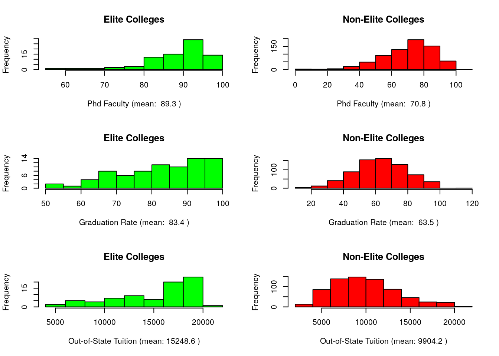 #### vii.
We can observe that the elite colleges have a higher porcentage of donations from alumni than both public and private colleges without the outlayers in the higher end either. We can see that private colleges actually does not mean Elite college given by its low correlation. We can infer from these panels plots that the the retention rate in general is strongly negative correlated with the student faculty ratio of an institution. We observe that the elite colleges have a strong correlation with the precense of terminal professors as faculty which is contrary to the tendency of colleges in general.
names<-c("Elite Colleges","Private Colleges","Public Colleges")
boxplot(college[college$Elite=="Yes",]$perc.alumni,
college.df[college.df$Private=="Yes",]$perc.alumni,
college.df[college.df$Private=="No",]$perc.alumni,
names=names,ylab="Percentage", main="Alumni Who Donate")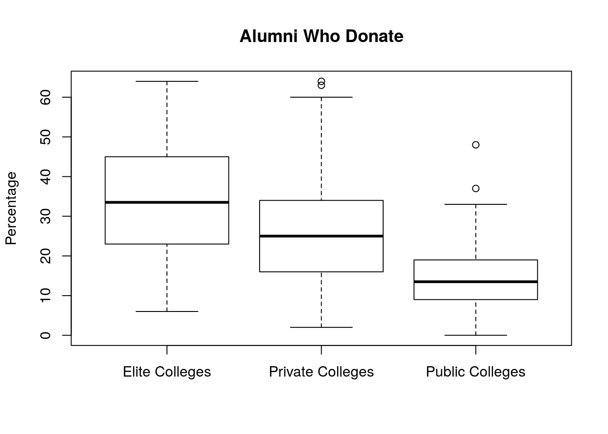
pairs.panels(college[,c(2,20,16,19,15)])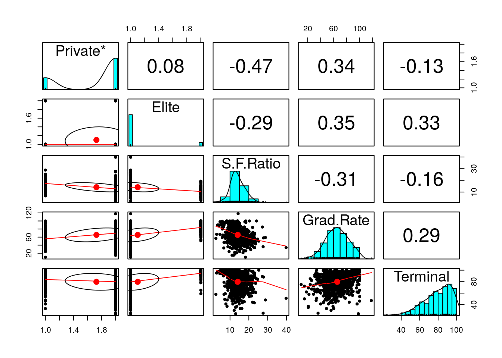
mpg.df <- read.csv("auto-mpg.csv",sep=",",header=T,stringsAsFactors = F)
mpg.df <- mpg.df[-c(which(mpg.df$horsepower== "?")),]str(mpg.df$horsepower)## chr [1:392] "130" "165" "150" "150" "140" "198" "220" "215" "225" "190" "170" "160" "150" "225" "95" "95" "97" ...mpg.df$horsepower <- as.integer(mpg.df$horsepower)
str(mpg.df$horsepower)## int [1:392] 130 165 150 150 140 198 220 215 225 190 ...typ <-c("double","integer","numeric")
x<-0
y<-0
listCorr=c()
namesOfCorr= c()
listAbs=c()
colNumber=c()
for (variable in mpg.df) {
x=x+1
name <-names(mpg.df)[x]
if(typeof(variable)%in% typ){
y=y+1
plotting.df <-data.frame(mpg.df$mpg, variable)
namesOfCorr[y] <-name
listCorr[y]<-cor(plotting.df)[2]
listAbs[y]<-abs(cor(plotting.df)[2])
colNumber[y]<-x
}
}
corr.df=data.frame(listCorr, listAbs,namesOfCorr,colNumber)
colnames(corr.df) <- c("correlation","absValue","field","columnNumber")
corr.df <-corr.df[-c(1),]
corr.df <- arrange(corr.df,corr.df$absValue)
pairs.panels(mpg.df[,c(1,tail(corr.df,1)$columnNumber)])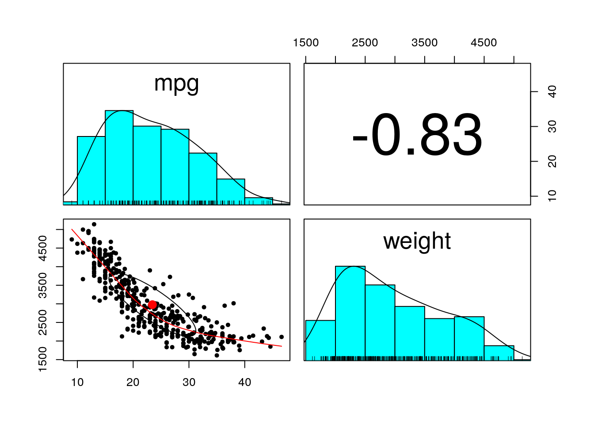
model.mpg <- lm(formula = paste("mpg ~ ",tail(corr.df,1)$field,sep = "") ,data = mpg.df)
summary(model.mpg)##
## Call:
## lm(formula = paste("mpg ~ ", tail(corr.df, 1)$field, sep = ""),
## data = mpg.df)
##
## Residuals:
## Min 1Q Median 3Q Max
## -11.974 -2.756 -0.336 2.138 16.519
##
## Coefficients:
## Estimate Std. Error t value Pr(>|t|)
## (Intercept) 46.216525 0.798672 57.9 <2e-16 ***
## weight -0.007647 0.000258 -29.6 <2e-16 ***
## ---
## Signif. codes: 0 '***' 0.001 '**' 0.01 '*' 0.05 '.' 0.1 ' ' 1
##
## Residual standard error: 4.33 on 390 degrees of freedom
## Multiple R-squared: 0.693, Adjusted R-squared: 0.692
## F-statistic: 879 on 1 and 390 DF, p-value: <2e-16plot(mpg.df[,c(tail(corr.df,1)$columnNumber,1)],main="Regression line of mpg ~ weight")
abline(model.mpg)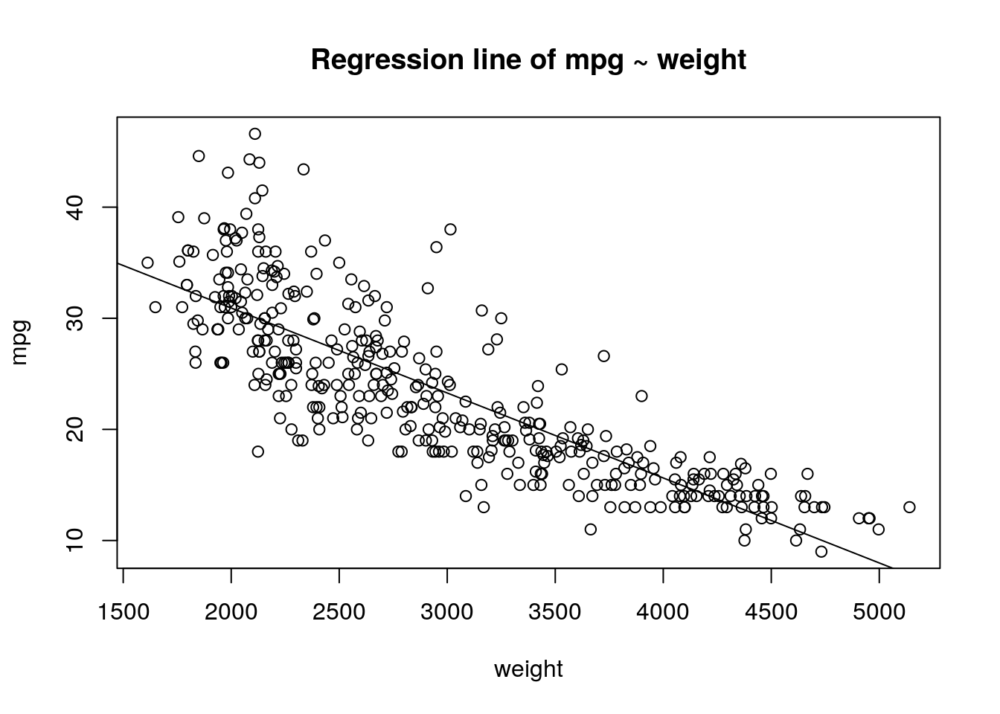
set.seed(1122)
index <- sample(1:nrow(mpg.df), 0.80*dim(mpg.df)[1])
train.df <- mpg.df[index, ]
test.df <- mpg.df[-index, ]train.model <- lm(formula = paste("mpg ~ ",paste(corr.df$field,collapse = " + ")) ,data = train.df)
summary(train.model)##
## Call:
## lm(formula = paste("mpg ~ ", paste(corr.df$field, collapse = " + ")),
## data = train.df)
##
## Residuals:
## Min 1Q Median 3Q Max
## -9.491 -1.942 -0.095 1.793 13.329
##
## Coefficients:
## Estimate Std. Error t value Pr(>|t|)
## (Intercept) -1.85e+01 5.13e+00 -3.61 0.00036 ***
## acceleration 1.38e-01 1.14e-01 1.21 0.22545
## origin 1.49e+00 3.12e-01 4.77 2.9e-06 ***
## model.year 7.48e-01 5.63e-02 13.30 < 2e-16 ***
## cylinders -5.34e-01 3.49e-01 -1.53 0.12707
## horsepower -1.40e-03 1.54e-02 -0.09 0.92784
## displacement 2.09e-02 8.51e-03 2.45 0.01477 *
## weight -6.92e-03 8.06e-04 -8.59 4.7e-16 ***
## ---
## Signif. codes: 0 '***' 0.001 '**' 0.01 '*' 0.05 '.' 0.1 ' ' 1
##
## Residual standard error: 3.29 on 305 degrees of freedom
## Multiple R-squared: 0.81, Adjusted R-squared: 0.805
## F-statistic: 185 on 7 and 305 DF, p-value: <2e-16Since car.name is unique for each instance, it cannot be used as a predictor. #### ii.
train.model <- lm(formula = paste("mpg ~ ",paste(corr.df$field,collapse = " + ")) ,data = train.df)
summary(train.model)##
## Call:
## lm(formula = paste("mpg ~ ", paste(corr.df$field, collapse = " + ")),
## data = train.df)
##
## Residuals:
## Min 1Q Median 3Q Max
## -9.491 -1.942 -0.095 1.793 13.329
##
## Coefficients:
## Estimate Std. Error t value Pr(>|t|)
## (Intercept) -1.85e+01 5.13e+00 -3.61 0.00036 ***
## acceleration 1.38e-01 1.14e-01 1.21 0.22545
## origin 1.49e+00 3.12e-01 4.77 2.9e-06 ***
## model.year 7.48e-01 5.63e-02 13.30 < 2e-16 ***
## cylinders -5.34e-01 3.49e-01 -1.53 0.12707
## horsepower -1.40e-03 1.54e-02 -0.09 0.92784
## displacement 2.09e-02 8.51e-03 2.45 0.01477 *
## weight -6.92e-03 8.06e-04 -8.59 4.7e-16 ***
## ---
## Signif. codes: 0 '***' 0.001 '**' 0.01 '*' 0.05 '.' 0.1 ' ' 1
##
## Residual standard error: 3.29 on 305 degrees of freedom
## Multiple R-squared: 0.81, Adjusted R-squared: 0.805
## F-statistic: 185 on 7 and 305 DF, p-value: <2e-16train.model <- lm(formula =mpg ~ origin + model.year + weight ,data = train.df)
summary(train.model)##
## Call:
## lm(formula = mpg ~ origin + model.year + weight, data = train.df)
##
## Residuals:
## Min 1Q Median 3Q Max
## -9.828 -2.099 -0.098 1.755 13.570
##
## Coefficients:
## Estimate Std. Error t value Pr(>|t|)
## (Intercept) -1.68e+01 4.36e+00 -3.85 0.00014 ***
## origin 1.23e+00 2.89e-01 4.26 2.7e-05 ***
## model.year 7.31e-01 5.28e-02 13.84 < 2e-16 ***
## weight -5.87e-03 2.86e-04 -20.56 < 2e-16 ***
## ---
## Signif. codes: 0 '***' 0.001 '**' 0.01 '*' 0.05 '.' 0.1 ' ' 1
##
## Residual standard error: 3.3 on 309 degrees of freedom
## Multiple R-squared: 0.805, Adjusted R-squared: 0.804
## F-statistic: 426 on 3 and 309 DF, p-value: <2e-16It contained a great \(R^2\) value since it explains about 83% of the variance in the data. This is clearly a high percentage without overfiting to the training dataset.
summary(train.model)##
## Call:
## lm(formula = mpg ~ origin + model.year + weight, data = train.df)
##
## Residuals:
## Min 1Q Median 3Q Max
## -9.828 -2.099 -0.098 1.755 13.570
##
## Coefficients:
## Estimate Std. Error t value Pr(>|t|)
## (Intercept) -1.68e+01 4.36e+00 -3.85 0.00014 ***
## origin 1.23e+00 2.89e-01 4.26 2.7e-05 ***
## model.year 7.31e-01 5.28e-02 13.84 < 2e-16 ***
## weight -5.87e-03 2.86e-04 -20.56 < 2e-16 ***
## ---
## Signif. codes: 0 '***' 0.001 '**' 0.01 '*' 0.05 '.' 0.1 ' ' 1
##
## Residual standard error: 3.3 on 309 degrees of freedom
## Multiple R-squared: 0.805, Adjusted R-squared: 0.804
## F-statistic: 426 on 3 and 309 DF, p-value: <2e-16anova(train.model)## Analysis of Variance Table
##
## Response: mpg
## Df Sum Sq Mean Sq F value Pr(>F)
## origin 1 5586 5586 512 <2e-16 ***
## model.year 1 3767 3767 345 <2e-16 ***
## weight 1 4612 4612 423 <2e-16 ***
## Residuals 309 3373 11
## ---
## Signif. codes: 0 '***' 0.001 '**' 0.01 '*' 0.05 '.' 0.1 ' ' 1plot(train.model$residuals,col="blue")
abline(0,0)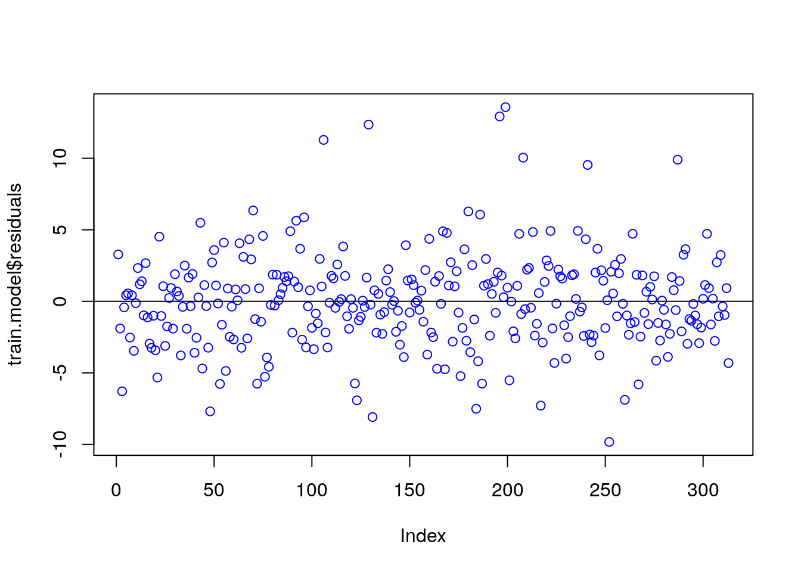 ### (g) We can see that the data is homosceadastic slightly skewed. But it looks almost as gaussian curve.
hist(train.model$residuals, freq = FALSE,col="yellow", nclass=20)
lines(density(train.model$residuals))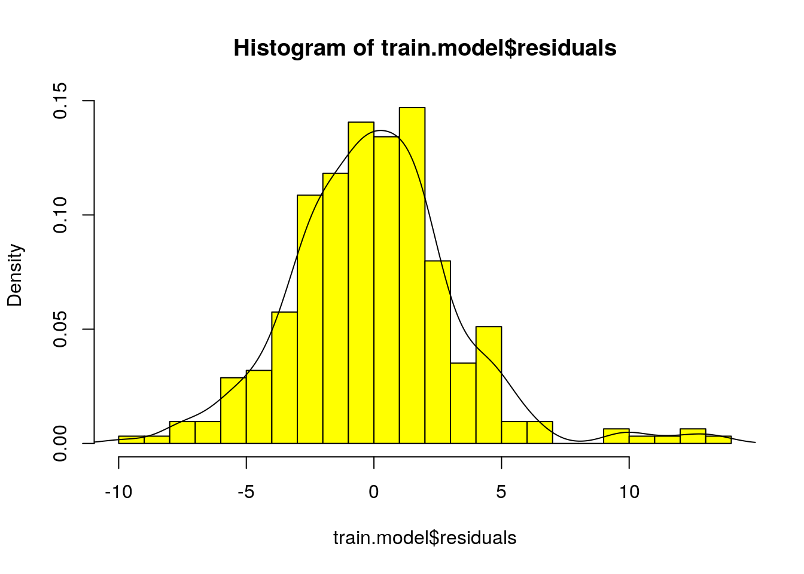 ### (h) Finding exact matchs
dfs<- data.frame(test.df$mpg,round(predict(train.model, newdata=test.df),0))
differ <- dfs[,1]-dfs[,2]
colnames<-c("difference")
z=0
for (variable in differ) {
if(variable == 0.0){
z=z+1
}
}
print(paste('If the model prediction is rounded to an integer value, the predictor would match successfully ',z," observations"))## [1] "If the model prediction is rounded to an integer value, the predictor would match successfully 7 observations"dfs<- data.frame(test.df$mpg,round(predict(train.model, newdata=test.df),1))
differ <- dfs[,1]-dfs[,2]
colnames<-c("difference")
z=0
for (variable in differ) {
if(variable == 0.0){
z=z+1
}
}
print(paste('If the model prediction is rounded to one significant value, the predictor would match successfully ',z," observations"))## [1] "If the model prediction is rounded to one significant value, the predictor would match successfully 1 observations"#which(mpg.df$horsepower== "?")
#lines(dfs[,1])
#lines(dfs[,2])dfs<- data.frame(test.df$mpg,round(predict(train.model, newdata=test.df),0))
differ <- dfs[,1]-dfs[,2]
colnames<-c("difference")
z=0
RSS<-0
ESS<-0
for (x in 1:length(dfs[,1])){
ESS=ESS + (dfs[x,1]-mean(dfs[,2]))^2
}
for (errs in differ) {
RSS=RSS+errs^2
#ESS=ESS+(errs-mean(differ))
}
RMSE=sqrt(mean((dfs[,1] -dfs[,2])^2))
RSE=sqrt((RSS)/(length(differ)-2))
TSS=ESS + RSS
print(paste("RSS: ",RSS))## [1] "RSS: 1002.61"print(paste("TSS: ",TSS))## [1] "TSS: 7467.01746835443"print(paste("RSE: ",RSE))## [1] "RSE: 3.60844967969751"print(paste("RMSE: ",RMSE))## [1] "RMSE: 3.56248029086265"